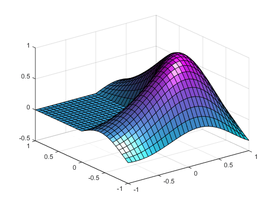
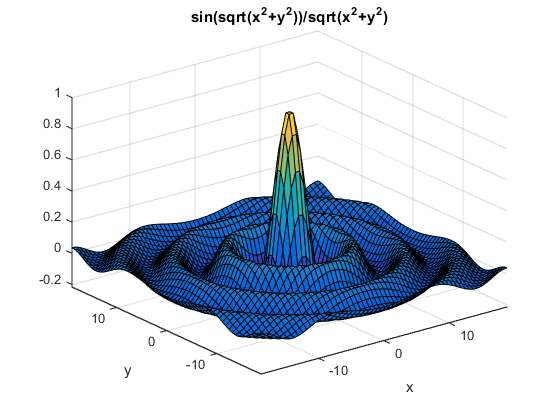
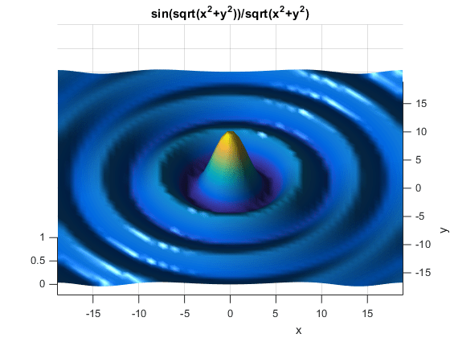

Lighting Overview
Lighting Commands
The MATLAB® graphics environment provides commands that enable you to position light sources and adjust the characteristics of the objects that are reflecting the lights. These commands include the following.
Command | Purpose |
|---|---|
Create or move a light with respect to the camera position | |
Create or position a light in spherical coordinates | |
Create a light object | |
Select a lighting method | |
Set the reflectance properties of lit objects |
You can set light and lit-object properties to achieve specific results. In addition to the material in this topic area, you can explore the lighting examples as an introduction to lighting for visualization.
Light Objects
You create a light object using the light
function. Three important light object properties are
The Color property determines the color of the directional
light from the light source. The color of an object in a scene is determined by the
color of the object and the light source.
The Style property determines whether the light source is a
point source (Style set to local), which
radiates from the specified position in all directions, or a light source placed at
infinity (Style set to infinite), which shines
from the direction of the specified position with parallel rays.
The Position property specifies the location of the light
source in axes data units. In the case of a light source at infinity,
Position specifies the direction to the light source.
Lights affect surface and patch objects that are in the same axes as the light. These objects have a number of properties that alter the way they look when illuminated by lights.
Properties That Affect Lighting
You cannot see light objects themselves, but you can see their effects on any
patch and surface objects present in the axes containing the light. A number of
functions create these objects, including surf, mesh, pcolor, fill, and fill3 as well as the surface and patch functions.
You control lighting effects by setting various axes, light, patch, and surface object properties. All properties have default values that generally produce desirable results. However, you can achieve the specific effect you want by adjusting the values of these properties.
Property | Effect |
|---|---|
An axes property that specifies the color of the background light in the scene, which has no direction and affects all objects uniformly. Ambient light effects occur only when there is a visible light object in the axes. | |
A patch and surface property that determines the intensity of the ambient component of the light reflected from the object. | |
A patch and surface property that determines the intensity of the diffuse component of the light reflected from the object. | |
A patch and surface property that determines the intensity of the specular component of the light reflected from the object. | |
A patch and surface property that determines the size of the specular highlight. | |
A patch and surface property that determines the degree to which the specular reflections are colored by the object color or the light source color. | |
A patch and surface property that determines the method used to calculate the effect of the light on the faces of the object. Choices are either no lighting, flat, or Gouraud, lighting algorithm. | |
A patch and surface property that determines the method used to calculate the effect of the light on the edges of the object. Choices are either no lighting, flat, or Gouraud lighting algorithm. | |
A patch and surface property that determines how faces are lit when their vertex normals point away from the camera. This property is useful for discriminating between the internal and external surfaces of an object. | |
A patch and surface property that specifies the color of the object faces. | |
A patch and surface property that specifies the color of the object edges. | |
A patch and surface property that contains normal vectors for each vertex of the object. MATLAB uses vertex normal vectors to perform lighting calculations. While MATLAB automatically generates this data, you can also specify your own vertex normals. | |
A patch and surface property that determines whether
MATLAB recalculates vertex normals if you change
object data ( |
For more information, see Axes Properties, Surface Properties, and Patch Properties.
Examples of Lighting Control
Lighting is a technique for adding realism to a graphical scene. It does this by simulating the highlights and dark areas that occur on objects under natural lighting (e.g., the directional light that comes from the sun). To create lighting effects, MATLAB defines a graphics object called a light. MATLAB applies lighting to surface and patch objects.
Example — Adding Lights to a Scene
This example displays the membrane surface and illuminates it with a light source emanating from a location to the right of the camera position.
membrane camlight
Creating a light activates a number of lighting-related properties controlling characteristics such as the ambient light and reflectance properties of objects.

Example — Illuminating Mathematical Functions
Lighting can enhance surface graphs of mathematical functions. For example,
use the ezsurf command to evaluate the
expression
over the region -6π to 6π.
h = fsurf(@(x,y) sin(sqrt(x.^2+y.^2))./sqrt(x.^2+y.^2), ... [-6*pi,6*pi]);

Now add lighting using the lightangle function, which
accepts the light position in terms of azimuth and elevation.
view(0,75) shading interp lightangle(-45,30) h.FaceLighting = 'gouraud'; h.AmbientStrength = 0.3; h.DiffuseStrength = 0.8; h.SpecularStrength = 0.9; h.SpecularExponent = 25; h.BackFaceLighting = 'unlit';

After obtaining the surface object's handle using findobj, you can set properties
that affect how the light reflects from the surface. See Properties That Affect Lighting for more
detailed descriptions of these properties.